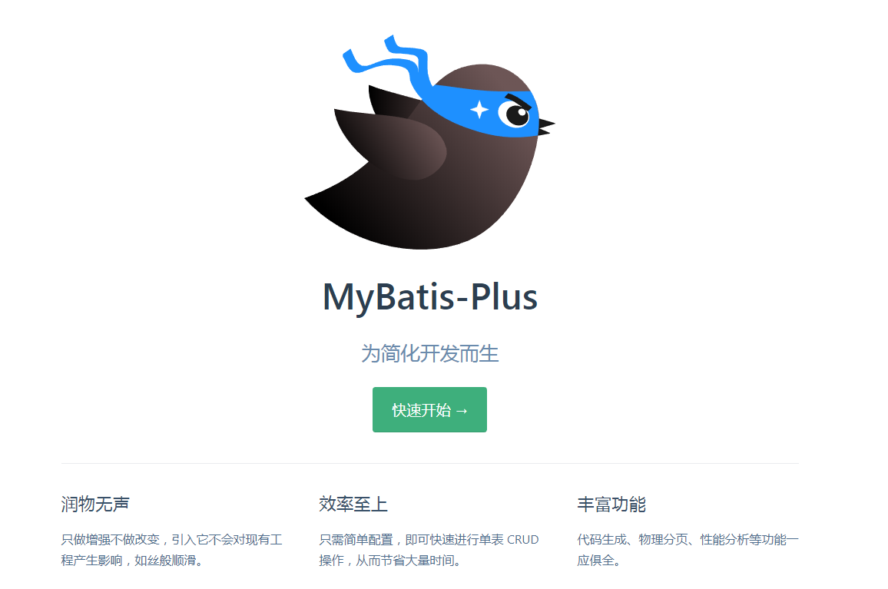
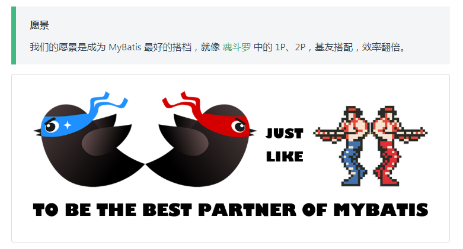

MybatisPlus概述
MybatisPlus可以节省大量的工作时间，所有的CRUD代码都可以自动化完成！

MyBatis-Plus（简称 MP）是一个 MyBatis 的增强工具，在 MyBatis 的基础上只做增强不做改变，为简化开发、提高效率而生。

特性
- 无侵入：只做增强不做改变，引入它不会对现有工程产生影响，如丝般顺滑
- 损耗小：启动即会自动注入基本 CURD，性能基本无损耗，直接面向对象操作
- 强大的 CRUD 操作：内置通用 Mapper、通用 Service，仅仅通过少量配置即可实现单表大部分 CRUD 操作，更有强大的条件构造器，满足各类使用需求
- 支持 Lambda 形式调用：通过 Lambda 表达式，方便的编写各类查询条件，无需再担心字段写错
- 支持主键自动生成：支持多达 4 种主键策略（内含分布式唯一 ID 生成器 - Sequence），可自由配置，完美解决主键问题
- 支持 ActiveRecord 模式：支持 ActiveRecord 形式调用，实体类只需继承 Model 类即可进行强大的 CRUD 操作
- 支持自定义全局通用操作：支持全局通用方法注入（ Write once, use anywhere ）
- 内置代码生成器：采用代码或者 Maven 插件可快速生成 Mapper 、 Model 、 Service 、 Controller 层代码，支持模板引擎，更有超多自定义配置等您来使用
- 内置分页插件：基于 MyBatis 物理分页，开发者无需关心具体操作，配置好插件之后，写分页等同于普通 List 查询
- 分页插件支持多种数据库：支持 MySQL、MariaDB、Oracle、DB2、H2、HSQL、SQLite、Postgre、SQLServer 等多种数据库
- 内置性能分析插件：可输出 Sql 语句以及其执行时间，建议开发测试时启用该功能，能快速揪出慢查询
- 内置全局拦截插件：提供全表 delete 、 update 操作智能分析阻断，也可自定义拦截规则，预防误操作
快速入门
注：只用mybatis-plus可以节省大量的代码，但尽量不要同时导入 mybatis 和 mybatis-plus，由于引用的依赖版本差异可能会报错
地址：https://mp.baomidou.com/guide/quick-start.html
使用第三方组件：
- 导入对应的依赖
- 研究依赖配置
- 代码编写
- 提高扩展能力
1. 创建数据库
2. 建表及插入数据
1 | DROP TABLE IF EXISTS user; |
3. 编写项目
创建一个springboot项目
添加依赖
1 | <!-- 数据库驱动 --> |
4. 配置mysql驱动
mysql 5 与 mysql 8 驱动不同，mysql 8 需要增加时区的配置
1 | spring: |
5.
传统方式：pojo-dao（连接mybatis，配置mapp.xml文件）-service-controller
使用mybatis-plus之后：
- pojo
- mapper接口
- 使用